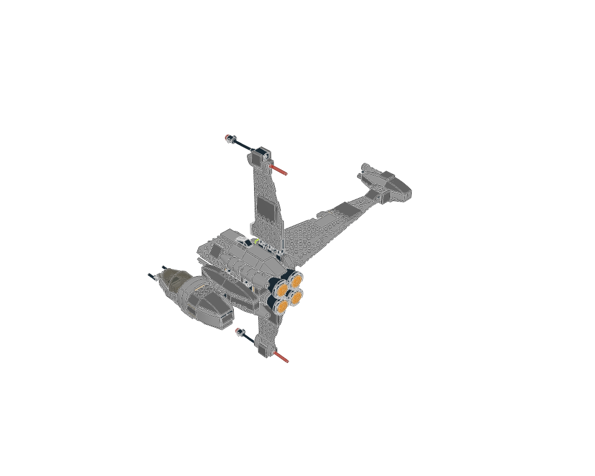
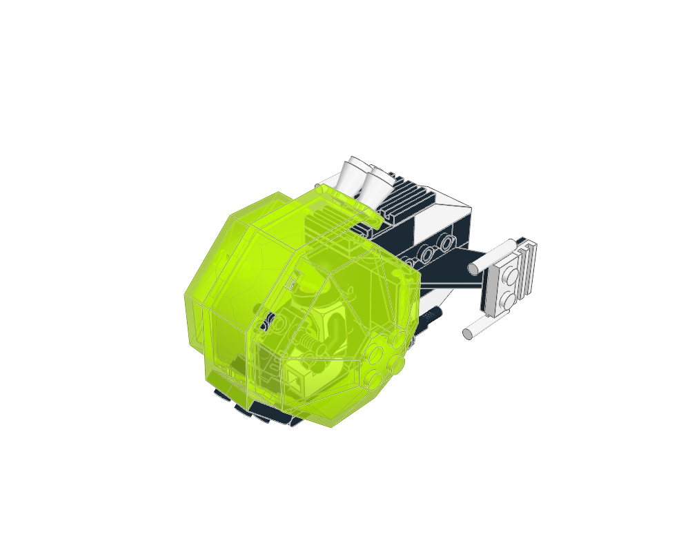
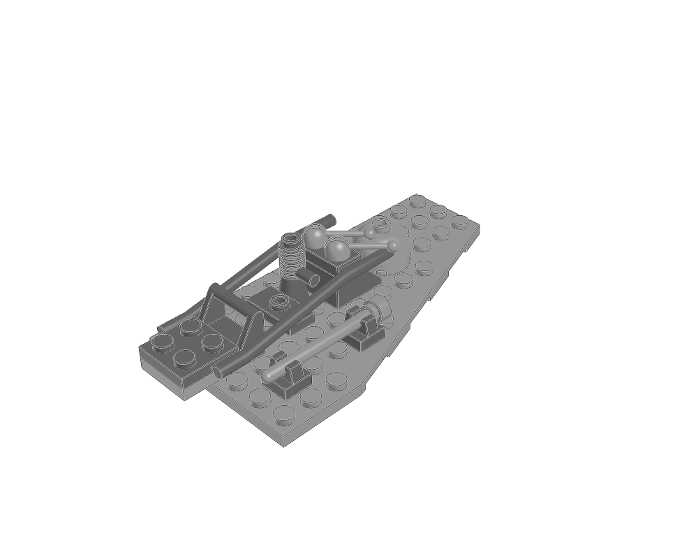
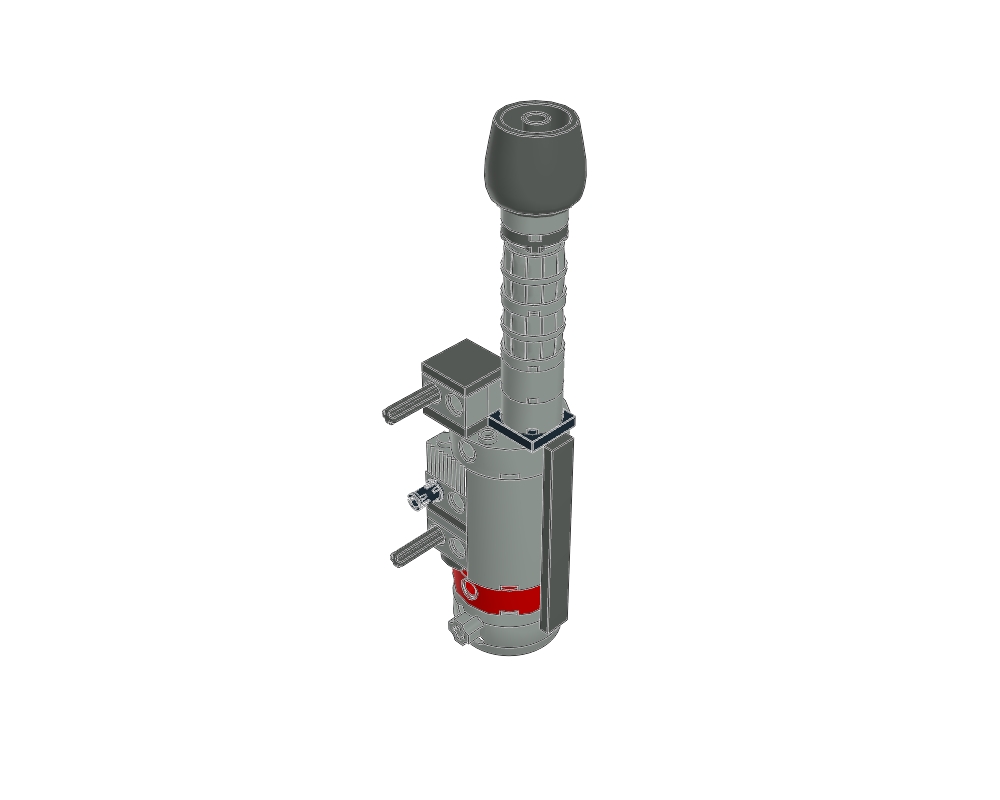
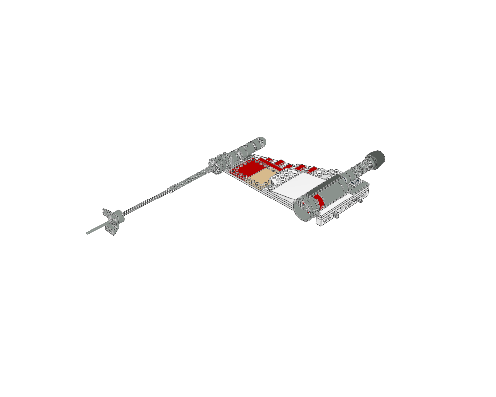
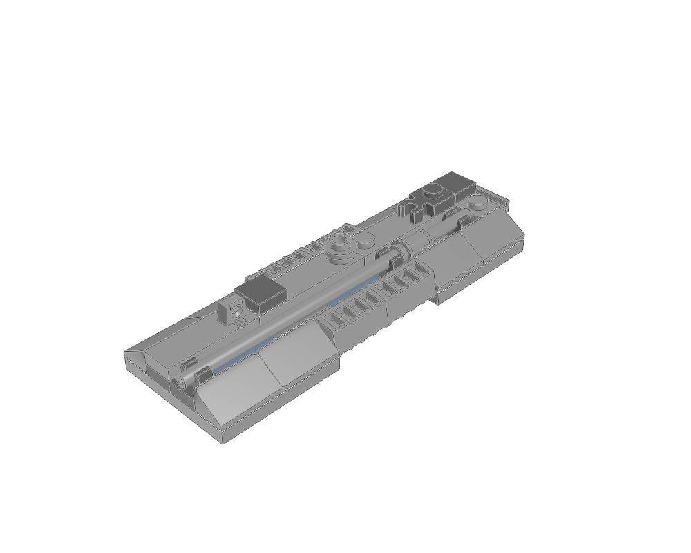

spaceship construction lessons
Generated from package READMEs. Inspiration, held, diagnostic and retired sources require explicit knowledge search scopes.

The root places one detailed airframe section containing the offset cockpit, three unequal wings and four-nozzle cluster. It does not contain separate wing/fuselage/engine submodels. Retain the three recorded position corrections and source provenance; articulation is untested.
Static visual evidence only unless the linked package records specific further checks. Search eligibility does not certify fit, motion or strength.

Octagonal side halves frame a shaped central door spanning the top/front. Study enclosure and pilot envelope; the pilot and helmet are nested context, not separate recommended constructions. Hinge motion and clearance remain unverified.
Static visual evidence only unless the linked package records specific further checks. Search eligibility does not certify fit, motion or strength.

A localized 15-part service cluster occupies a small right-side upper-hull bay. Study detail composition and the actual mounting context; this is not a lesson about the whole Falcon.
Static visual evidence only unless the linked package records specific further checks. Search eligibility does not certify fit, motion or strength.
Upright local panels rotate onto the hull’s sideways stud faces; preserve the actual handed layouts and interleaving wing splices. The cockpit section is a canopy only; its floor belongs to the hull. One core-and-skin lesson, not a default spacecraft shape.
Static visual evidence only unless the linked package records specific further checks. Search eligibility does not certify fit, motion or strength.

Concentric engine construction with transverse mounts, reviewed in both actual wing parents. Nacelle-1 has different mounting details and is not an interchangeable duplicate. No new contact or motion certification.
Static visual evidence only unless the linked package records specific further checks. Search eligibility does not certify fit, motion or strength.

Thin plate wing, nacelle-1, projecting tip cannon and root trim form this local construction. The engine and laser cannon are separate roles. Preserve parent mounting context; the whole X-wing is not a single dish.
Static visual evidence only unless the linked package records specific further checks. Search eligibility does not certify fit, motion or strength.

Contoured armour and detail panel on the starboard engine nacelle. Preserve the actual parent transform; it is not a port-side fuselage panel. Static source and image evidence only.
Static visual evidence only unless the linked package records specific further checks. Search eligibility does not certify fit, motion or strength.